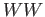
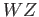
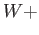
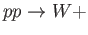
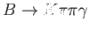
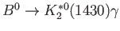

Curriculum Vitae
PDF
Jeffrey Berryhill
Scientist
Business Address:
| Fermi National Accelerator Laboratory |
Telephone |
: |
(630) 840-8837 |
| WH 11E, Mail Station 205 |
FAX |
: |
(630) 840-2194 |
| Kirk & Pine Street |
E-mail |
: |
berryhil@fnal.gov |
| Batavia, IL 60510 |
Home Page |
: |
http://home.fnal.gov/berryhil |
Research Experience:
Education:
- Ph.D., Physics,
Dissertation:A Search for New Physics in Photon-Lepton
Events in Proton-Antiproton Collisions at
TeV
Adviser: Henry Frisch
December 2000: University of Chicago
Chicago, Illinois
- B.A., Physics and Mathematics,
with Highest Honors in Mathematics
and High Distinction in General Scholarship,
May 1993: University of California, Berkeley
Berkeley, California
Honors and Awards:
Laboratory Support:
- CMS RA hiring committee (Fall 2013-present): interview and hiring decisions for all postdoctoral researchers for CMS Center.
- 2010 Hadron Collider Physics Summer School, Local Organizing Committee: Speaker/student selection, curriculum design, logistical support.
- Postdoc hiring committee, Particle Physics Division and CMS Center (Fall 2008-Summer 2013): interview and hiring decisions for all postdoctoral researchers for Particle Physics Division and CMS Center.
Conference Talks and Seminars:
- Electroweak Physics: highlights of experimental results at high energy
37th International Conference on High Energy Physics
- Tests of the Electroweak Interactions at Hadron Colliders
Frontiers in Particle Physics: From Dark Matter to the LHC and Beyond
Aspen Center for Physics, January 2014
- Tests of the Electroweak Theory with the CMS Experiment at the LHC
High Energy Physics Seminar
University of Chicago, October 2013
- Tests of Vector Boson plus Jets Production at the LHC
CTEQ Workshop on QCD Tools for LHC Physics
Fermilab, November 2013
- W and Z Boson Physics with
the CMS Experiment
QCD@LHC 2012
Lansing, Michigan, August 2012
- Seven Slogans for the Future of LHC Electroweak Physics
Chicago 2012 workshop on LHC physics
Chicago, May 2012
- Electroweak and Top Measurements from CMS
Fermilab Joint Experimental-Theoretical Seminar
Fermilab, March 2011
- Precision Measurement
of W and Z Production with the CMS Detector
Particle Physics Seminar
University of Notre Dame, November 2010
- Prospects for Early Measurements of W and Z Bosons with CMS at the LHC
International Conference on Particles and Nuclei (PANIC08)
Eilat, Israel, November 2008
- Big Science's Next Big Bang: The Large Hadron Collider
Fermilab 2008 Symposium on the Nature of Science
Fermilab, October 2008
- Early Physics Prospects at CMS
URA Theory Workshop, Beyond the Standard Model: from the Tevatron to the LHC
Fermilab, September 2008
- Rare Decays
Flavor in the Era of the LHC
CERN, March 2007
- Physics at Colliders
Fermilab Academic Lecture Series: Flavor Physics
Fermilab, February 2007
- Working Group Convenor
SUSY 2006: International Conference on Supersymmetry and the Unification of Fundamental Interactions
University of California, Irvine, California, June 2006
- New Results from BaBar: Rare Meson Decays and the Search for New Phenomena
XLIth Rencontres de Moriond,
Electroweak Interactions and Unified Theories
La Thuile, Italy, March 2006
- Electroweak Penguin Decays:
and
SLAC/INT Workshop on Flavor Physics and QCD
University of Washington, May 2005
- Electroweak Penguin Decays at BaBar:
and
Cornell/LNS Journal Club Seminar
Cornell University, April 2005
- The Penguin and the Elephant
Rutgers High Energy Physics Seminar
Rutgers University, March 2005
- Working Group Summary on and
2005 CKM Workshop on the Unitarity Triangle
University of California, San Diego, California, March 2005
- Working Group Convenor
2005 CKM Workshop on the Unitarity Triangle
University of California, San Diego, California, March 2005
- Organizer and Discussion Leader
/Shape Function Workshop
Stanford Linear Accelerator Center, Menlo Park, California, December 2004
- The Physics of Flavor: Half a Billion b Quarks for BaBar
Texas A & M Physics Colloquium
College Station, Texas, November 2004
- Radiative Penguin B Decays at BaBar
32nd International Conference on High Energy Physics
Beijing, China, August 2004
- Semileptonic B Decays and the Measurement of
APS April Meeting 2004
Denver, Colorado, May 2004
- The Physics of
Super B Factory Workshop
University of Hawaii, Manoa, Hawaii, January 2004
- Organizer and Discussion Leader
Workshop
Stanford Linear Accelerator Center, Menlo Park, California, December 2003
- Photon Physics at the High Energy Frontier
SLAC Experimental Seminar
Stanford Linear Accelerator Center, Menlo Park, California, January 2003
- Photon Physics at the High Energy Frontier
Fermilab Joint Experimental-Theoretical Seminar
Fermi National Accelerator Laboratory, May 2002
- Results from Babar on the Rare Exclusive Decays
and
2002 Meeting of The Division of Particles and Fields
College of William and Mary, Williamsburg, Virginia, May 2002
- Photon Physics at the High Energy Frontier
BNL Particle Physics Seminar
Brookhaven National Laboratory, Upton, New York, March 2001
- New Phenomena at the Tevatron
XXXVI Rencontres de Moriond,
Electroweak Interactions and Unified Theories
Les Arcs, France, March 2001
- Photon Physics at the High Energy Frontier
UCSB High Energy Physics Seminar
University of California, Santa Barbara, California January 2001
- Lepton-Photon Physics at the High Energy Frontier
LNS Journal Club HEP Seminar
Laboratory of Nuclear Studies, Ithaca, New York, February 2000
- Forward-Backward Charge Asymmetry of Electron Pairs Above the
Z Pole at CDF,
American Physical Society Meeting
Indianapolis, Indiana, May 1996
- Measurement of Z / Interference at CDF,
New Perspectives Conference
Fermi National Accelerator Laboratory, Batavia, Illinois, June 1996
- Forward-Backward Charge Asymmetry of Electron Pairs Above the
Z Pole at CDF,
HEP Lunch Seminar
University of Chicago, Chicago, Illinois, February 1996
Societies:
References:
| Patricia McBride |
Dan Green |
| Fermi National Accelerator Laboratory |
Fermi National Accelerator Laboratory |
| CMS Center |
Particle Physics Division |
| Batavia, IL 60510 |
Batavia, IL 60510 |
| (630) 840-8071 |
(630) 840-3104 |
| mcbride@fnal.gov |
dgreen@fnal.gov |
| |
|
| Prof. Jeffrey D. Richman |
Prof. Claudio Campagnari |
| University of California |
University of California |
| Department of Physics |
Department of Physics |
| Santa Barbara, CA 93106-9530 |
Santa Barbara, CA 93106-9530 |
| (805) 893-8408 |
(805) 893-7567 |
| richman@hep.ucsb.edu |
claudio@hep.ucsb.edu |
| |
|
| Prof. Henry J. Frisch |
Prof. Melvyn Shochet |
| University of Chicago |
University of Chicago |
| 5640 S. Ellis Ave. |
5640 S. Ellis Ave. |
| Chicago, Il 60637 |
Chicago, Il 60637 |
| (773) 702-7479 |
(773) 702-7440 |
| frisch@cdf.uchicago.edu |
shochet@cdf.uchicago.edu |
| |
|
Publications
A) Publications and Preprints with Principal
Authorship or Major Contributions
CMS publications
- Search for the standard model Higgs boson decaying to bottom quarks in pp collisions at TeV, The CMS Collaboration, Phys. Lett. B 710 (2012) 284.
- Measurement of the Inclusive W and Z Production Cross Sections in pp Collisions at TeV with the CMS Experiment, The CMS Collaboration, J. High Energy Phys. 10 (2011) 132.
- Measurements of Inclusive W and Z Cross Sections in pp Collisions at TeV, The CMS Collaboration, J. High Energy Phys. 01 (2011) 080.
- Commissioning of the CMS High Level Trigger with Cosmic Rays, The CMS Collaboration, J. Instrum. 5 (2010) T03005.
- Towards a Measurement of the Inclusive
 and
Cross Sections in pp Collisions at
TeV,
The CMS Collaboration, CMS-PAS-EWK-09-004
(2009).
and
Cross Sections in pp Collisions at
TeV,
The CMS Collaboration, CMS-PAS-EWK-09-004
(2009).
- Towards a Measurement of the Inclusive
and
Cross Sections in pp Collisions at
TeV,
The CMS Collaboration, CMS-PAS-EWK-08-005
(2008).
- Measuring Electron Efficiencies at CMS with Early Data ,
The CMS Collaboration, CMS-PAS-EGM-07-001
(2008).
- , , and Decays, report of Working Group 2 of the CERN Workshop on Flavor in the Era of the LHC, Geneva, Switzerland, 6-8 Feb 2006
M. Artuso et al., Eur. Phys. J. C 57, 309 (2008).
BaBar publications
- Search for the Rare Decay
B. Aubert et al. (BaBar Collaboration), Phys. Rev. Lett. 99, 051801 (2007).
- Measurements of branching fractions, rate asymmetries, and angular distributions in the rare decays
and
B. Aubert et al. (BaBar Collaboration), Phys. Rev. D 73, 092001 (2006).
- Measurements of the rare decays
and
B. Aubert et al. (BaBar Collaboration), hep-ex/0507005,
BABAR-CONF-05/07, SLAC-PUB-11330, contributed to Lepton-Photon 2005.
- Evidence for the Rare Decay
and Measurement of the
Branching Fraction
B. Aubert et al. (BaBar Collaboration), Phys. Rev. Lett. 91, 221802 (2003).
CDF Run I publications
- Search for New Physics in Photon-Lepton Events in Collisions at
TeV
D. Acosta et al. (CDF Collaboration), Phys. Rev. Lett. 89, 041802 (2002).
- Search for New Physics in Photon-Lepton Events in Collisions at
TeV
D. Acosta et al. (CDF Collaboration), Phys. Rev. D 66, 012004 (2002).
- Forward-Backward Charge Asymmetry of Electron Pairs Above the Z Pole
F. Abe et al. (CDF Collaboration), Phys. Rev. Lett. 77, 2616 (1996).
B) Preprints and Publications overseen as co-convener
CMS Standard Model Physics Analysis Group, 2012-3
- Measurement of differential cross sections for the production of a pair of isolated photons in pp collisions at = 7 TeV
S. Chatrchyan et al. (CMS Collaboration), submitted to EPJC, arXiv:1405.7225.
- A search for WW gamma and WZ gamma production and constraints on anomalous quartic gauge couplings in pp collisions at = 8 TeV
S. Chatrchyan et al. (CMS Collaboration), submitted to PRD, arxiv:1404.4619.
- Measurement of WZ and ZZ production in pp collisions at = 8 TeV in final states with b-tagged jets
S. Chatrchyan et al. (CMS Collaboration), submitted to EPJC, arxiv:1403.3047.
- Measurement of the production cross sections for a Z boson and one or more b jets in pp collisions at = 7 TeV
S. Chatrchyan et al. (CMS Collaboration), submitted to JHEP, arxiv:1402.1521.
- Measurement of inclusive W and Z boson production cross sections in pp collisions at = 8 TeV
S. Chatrchyan et al. (CMS Collaboration), Phys. Rev. Lett. 112, 191802 (2014).
- Measurement of the production cross section for a W boson and two b jets in pp collisions at = 7 TeV
S. Chatrchyan et al. (CMS Collaboration), submitted to PLB, arxiv:1312.6608.
- Measurement of the muon charge asymmetry in inclusive pp W + X production at =7 TeV and an improved determination of light parton distribution functions
S. Chatrchyan et al. (CMS Collaboration), submitted to PRD, arxiv:1312.6283.
- Measurement of the triple-differential cross section for photon+jets production in proton-proton collisions at =7 TeV
S. Chatrchyan et al. (CMS Collaboration), submitted to JHEP, arxiv:1311.6141.
- Probing color coherence effects in pp collisions at = 7 TeV
S. Chatrchyan et al. (CMS Collaboration), submitted to EPJC, arxiv:1311.5815.
- Measurement of the differential and double-differential Drell-Yan cross sections in proton-proton collisions at = 7 TeV
S. Chatrchyan et al. (CMS Collaboration), JHEP 1312 (2013) 030.
- Rapidity distributions in exclusive Z + jet and photon + jet events in pp collisions at =7 TeV
S. Chatrchyan et al. (CMS Collaboration), Phys. Rev. D88, 112009 (2013).
- Measurement of the cross section and angular correlations for associated production of a Z boson with b hadrons in pp collisions at = 7 TeV
S. Chatrchyan et al. (CMS Collaboration), JHEP 1312, (2013) 039.
- Measurement of associated W + charm production in pp collisions at =7 TeV
S. Chatrchyan et al. (CMS Collaboration), JHEP 1402, (2014) 013.
- Measurement of the production cross section for
in pp collisions at = 7 TeV and limits on and triple gauge boson couplings
S. Chatrchyan et al. (CMS Collaboration), JHEP 1310, (2013) 164.
- Measurement of the W gamma and Z gamma inclusive cross sections in pp collisions at = 7 TeV and limits on anomalous triple gauge boson couplings
S. Chatrchyan et al. (CMS Collaboration), Phys. Rev. D89, 092005 (2014).
- Measurement of the W+W− Cross section in pp Collisions at =7 TeV and Limits on Anomalous and
 couplings
couplings
S. Chatrchyan et al. (CMS Collaboration), Eur. Phys. J. C73, 2610 (2013).
- Measurement of the ratio of the inclusive 3-jet cross section to the inclusive 2-jet cross section in pp collisions at = 7 TeV and first determination of the strong coupling constant in the TeV range
S. Chatrchyan et al. (CMS Collaboration), Eur. Phys. J. C73, 2604 (2013).
- Studies of jet mass in dijet and W/Z + jet events
S. Chatrchyan et al. (CMS Collaboration), JHEP 1305, 090 (2013).
- Measurement of W+W- and ZZ production cross sections in pp collisions at = 8 TeV
S. Chatrchyan et al. (CMS Collaboration), Phys. Lett. B721, 190 (2013).
- Event shapes and azimuthal correlations in Z + jets events in pp collisions at =7 TeV
S. Chatrchyan et al. (CMS Collaboration), Phys. Lett. B722, 238 (2013).
- Measurements of differential jet cross sections in proton-proton collisions at =7 TeV with the CMS detector
S. Chatrchyan et al. (CMS Collaboration), Phys. Rev. D87, 112002 (2013).
- Measurement of the ZZ production cross section and search for anomalous couplings in 2l2l' final states in pp collisions at =7 TeV
S. Chatrchyan et al. (CMS Collaboration), JHEP 01, 063 (2013).
-
S. Chatrchyan et al. (CMS Collaboration), Phys. Rev. Lett. 112, 191802 (2014).
BaBar Radiative Penguin Analysis Working Group, 2003-6
- Search for the Rare Decay
B. Aubert et al. (BaBar Collaboration), Phys. Rev. Lett. 99, 051801 (2007).
- Branching fraction measurements of
,
, and
B. Aubert et al. (BaBar Collaboration), Phys. Rev. Lett. 98, 151802 (2007).
- Measurement of Decays to
B. Aubert et al. (BaBar Collaboration), Phys. Rev. D 75, 051102 (2007).
- Measurement of the branching fraction and photon energy moments of
 and

B. Aubert et al. (BaBar Collaboration), Phys. Rev. Lett. 97, 171803 (2006).
- Measurements of branching fractions, rate asymmetries, and angular distributions in the rare decays
and
B. Aubert et al. (BaBar Collaboration), Phys. Rev. D 73, 092001 (2006).
- Measurement of Branching Fractions in Radiative B Decays to  and Search for B Decays to
B. Aubert et al. (BaBar Collaboration), Phys. Rev. D 74, 031102 (2006).
- Measurements of the
 Branching Fraction and Photon Spectrum from a Sum of Exclusive Final States
B. Aubert et al. (BaBar Collaboration), Phys. Rev. D 72, 052004 (2005).
- Measurement of the time-dependent CP-violating asymmetry in
decays
B. Aubert et al. (BaBar Collaboration), Phys. Rev. D 72, 051103 (2005).
- Measurement of branching fractions and mass spectra of
B. Aubert et al. (BaBar Collaboration), Phys. Rev. Lett. 98, 211804 (2007).
- Search for the Radiative Decay
B. Aubert et al. (BaBar Collaboration), Phys. Rev. D 72, 091103(R) (2005).
- Search for the Rare Decay
B. Aubert et al. (BaBar Collaboration), Phys. Rev. D 72, 051106(R) (2005).
- Measurement of the
and
Branching Fractions
B. Aubert et al. (BaBar Collaboration), Phys. Rev. D 70, 091105 (2004).
- Search for the Radiative Penguin Decays
,
, and
B. Aubert et al. (BaBar Collaboration), Phys. Rev. Lett. 94, 011801 (2005).
- Measurement of Branching Fractions, and CP and Isospin Asymmetries, for

B. Aubert et al. (BaBar Collaboration), Phys. Rev. D 70, 112006 (2004).
- Measurement of Time-dependent CP-violating Asymmetries
in
 Decays
B. Aubert et al. (BaBar Collaboration), Phys. Rev. Lett. 93, 201801 (2004).
- Measurement of the
 Branching Fraction with a Sum over Exclusive Modes
Branching Fraction with a Sum over Exclusive Modes
B. Aubert et al. (BaBar Collaboration), Phys. Rev. Lett. 93, 081802 (2004).
- Measurement of the Direct CP Asymmetry in
Decays
B. Aubert et al. (BaBar Collaboration), Phys. Rev. Lett. 93, 021804 (2004).
- Evidence for the Rare Decay
and Measurement of the
Branching Fraction
B. Aubert et al. (BaBar Collaboration), Phys. Rev. Lett. 91, 221802 (2003).
Other Publications Reviewed
- Observation of a Charmed Baryon Decaying to at a Mass Near 2.94

B. Aubert et al. (BaBar Collaboration), Phys. Rev. Lett. 98, 012001 (2007).
- Determination of the Branching Fraction for
Decays and of from Hadronic-Mass and Lepton-Energy Moments
B. Aubert et al. (BaBar Collaboration), Phys. Rev. Lett. 93, 011803 (2004).
- Measurements of Moments of the Hadronic Mass Distribution in Semileptonic B Decays
B. Aubert et al. (BaBar Collaboration), Phys. Rev. D 69, 111103 (2004).
A complete list of publications with my name on them can be browsed at
SPIRES.
Jeffrey Berryhill
2014-07-30